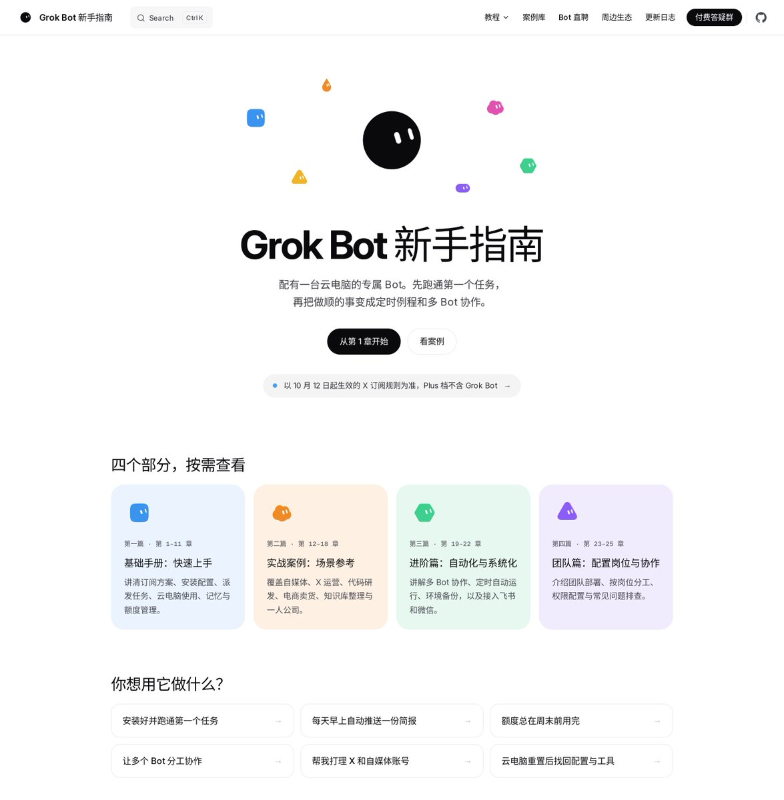
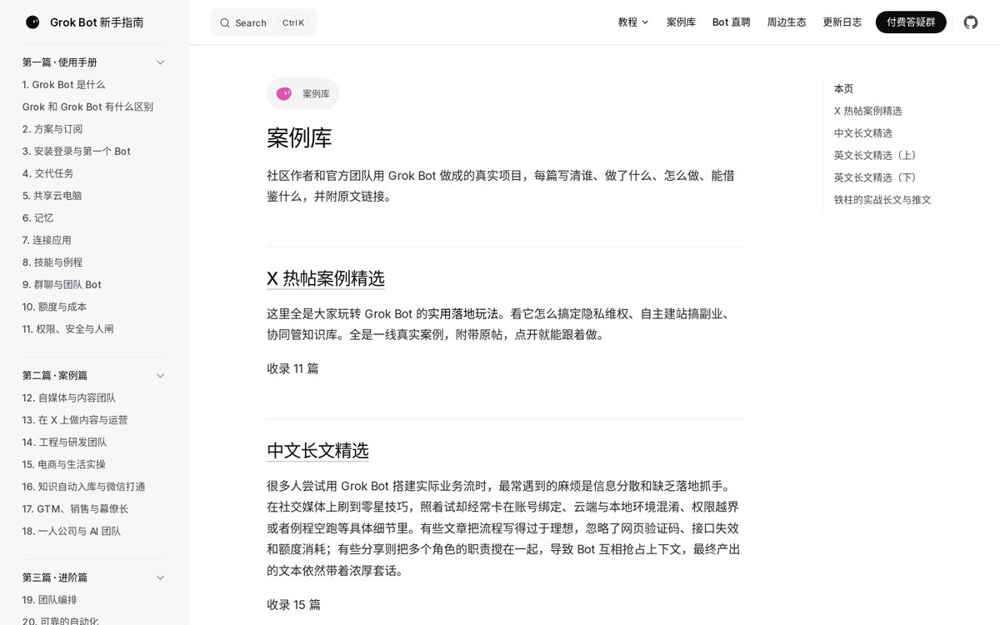

西堂 picks · 16/24
Grok Bot 新手指南：从跑通单任务到多Bot分工协作
@cgnot996 · 铁柱AGI · Wed Oct 21 04:23:56 +0000 2026
说实话，平时大家聊起 Grok Bot (xAI's AI assistant that comes with its own computer)，经常问我的就两件事：这东西跟平常聊天的 Grok 到底有啥区别？以及，买了之后到底拿它能干嘛？
很多人兴冲冲开通了账号，打开界面一看，既有对话框，又有云电脑终端，还连着各种环境和权限，当场就懵了。
折腾半天，最后还是把它当成普通的聊天窗口来用。除了问问八卦、改改病句，根本没发挥出它的威力。
面对一个全新的硬核工具，大家缺的到底是什么？
我想了挺久，其实不是更多晦涩的参数，而是一张能让人照着一步步走通的路线图。
所以我花了大把精力，把自己在实战里踩过的坑、报过的错，以及社区里真正跑通的好案例，系统整理成了中文学习站 Grok Bot 新手指南（https://bot.fmcat.top）。
先跟各位交个底，这是我自己整理和维护的社区非官方中文教程，不是 xAI 官方出品。
连学习站的源码，我也已经在 GitHub (a site for storing and sharing code) 上全部开源了。就是想让每一个打算把它用进日常工作的朋友，手头能有一份踏实、靠谱的参考。

剥开来看，它到底是个什么东西
很多人一听到新名词就头大。
你可以这么理解，平常用的各种聊天工具，就像个博古通今但只能动嘴皮子的军师；而 Grok Bot，是一台真正配有云电脑的专属 Bot。
它不是在对话框里跟你打机锋，而是带着手脚进来的打工人。
它背后有一台实打实的云电脑环境，能替你跑脚本、抓网页，读写文件并连接各种外部应用，甚至可以在你关掉电脑睡觉的时候，帮你在后台值守代码仓库。
不过这里要先提醒一句，别踩订阅的坑。
按照目前生效的 X 订阅规则，Plus 档是不包含 Grok Bot 的，想用它起步得选 Premium。
在学习站的首页，我把它的核心定位写成了一句话：先跑通第一个任务，再把做顺的事变成定时触发器和多 Bot 协作。
如果刚打开网站不知道从哪看起，可以直接去点首页的「你想用它做什么」：
- 安装好并跑通第一个任务
- 每天定时自动推送简报
- 让多个 Bot 分工协作
- 帮我打理 X 和自媒体账号
- 云电脑重置后找回配置与工具
顺着你当下正头疼的一个问题点进去，就能立刻开始。
别一上来就搭团队，老老实实走这四步
很多人用工具容易急躁，刚装上就恨不得搭一个全自动的复杂流水线。
结果往往卡在某个权限配置或者报错上，折腾两天直接放弃。
在我看来，驯服一个强大的新工具，就像在现实里带实习生。
谁也不可能刚接手第一天，就把整个部门的工作全甩给他管。
在学习站里，我把新手的进阶路线提炼成了四个阶段。
第一步：跑通任务
别想太远，先交代一个明确、边界清晰的具体任务。
比如让它整理一篇长文、提取几个关键数据。看看它怎么在云电脑里调用工具，怎么给你反馈。
第二步：磨合调整
观察它哪里理解偏了，哪些操作需要你确认。
在这个阶段把权限边界和沟通习惯磨顺，摸清它的脾气。
第三步：固定触发器
如果有一件事你每天都要做，而且前两步已经跑顺了，就直接把它设成自动执行的触发器。
比如固定时间抓取行业资讯，或者定时检查某些业务指标。
第四步：组建团队
一个人管好几个触发器觉得分身乏术，再考虑建不同的专属 Bot。
让它们各自负责不同的岗位，彼此协同。
只要把节奏压稳，一步步来，你根本不会觉得它难用。
四篇 25 章，把该讲的细节全拆开了
整套学习站目前一共有四篇、25 个章节。
说实话，把这 25 章从零码齐，比我想象的费劲得多。为了讲清楚一个权限人闸或者环境重置，我自己就在云电脑里反复推倒重来好几遍。
我把大家日常能碰到的核心问题，全部分门别类码得整整齐齐。
第一篇：使用手册（1–11 章）
这是打底的基础。
从 Grok Bot 到底是什么、它跟普通 Grok 的差异，到方案选择与订阅避坑；从安装登录交代第一个任务，到共享云电脑、记忆 (memory (facts the bot keeps between chats))机制与应用连接；再到技能 (skill (a saved how-to the bot can reuse))与触发器、群聊与团队、使用成本，以及关键的权限安全与人闸机制。
看完这一篇，你就能把它的底层逻辑摸得明明白白。
第二篇：案例篇（12–18 章）
光看理论没用，你得看别人是怎么拿它干活的。
这一篇覆盖了自媒体与内容团队、X 内容运营、工程研发、电商与生活日常，还有知识自动入库与微信打通、GTM 销售与幕僚长，以及真正的一人公司实践。
第三篇：进阶篇（19–22 章）
如果你已经用顺了，想往深度走。
这里讲的是团队编排与可靠的自动化搭建，以及云电脑环境的备份与恢复，还有如何把它接入到飞书和微信这类常用通讯软件里。
第四篇：落地篇（23–25 章）
专门写给团队和企业用户。
怎么落地团队版、怎么按真实岗位去组建一支协作团队，还有常见的问题清单与排错排查指南。
拿来就能抄作业的真实案例
为了让大家少走弯路，我把经过实战检验的高质量内容汇总成了案例库。
这里面既有 X 上的热帖案例精选、中英文优质长文，也有我自己平时写的大量实战记录。
在首页就能看到不少具体的实战打法：
- 我自己用的 Webhook (a web address that triggers an action when called) 配合快捷指令自动存知识库
- 别人用五个 Bot 分工协作打理自媒体
- 闲鱼上架商品、小红书做图与短视频制作
- 亚马逊店铺日常运营值守
- 自动化代码仓库值守
- 直接在微信里发指令打理 X 账号

开箱即用的模板与周边生态
除了教程和案例，学习站里还塞了两个我自己非常看重的板块。
Bot 直聘
这 9 个模板不是随手凑数的，全是我自己在云电脑里反反复复调通、用顺了才敢导出来放进站里。
包括赛博小晚、Muse 管家、飞书应用管家、额度 (quota (how much use your plan allows))省省助手、微信文章捕手、记账管家、Maples造型师、记忆管家、X调度员。
这些模板你可以直接一键导入，省去自己从零琢磨系统提示词 (prompt (the instruction you give the AI))的麻烦。
周边生态与更新日志
比如用来收集网页素材的浏览器插件 Grok Bot Clipper。
而在更新日志板块，我持续同步着电脑端与手机端的官方变动。
官方每次发版，我都把那些生硬的更新说明一条条啃下来，提炼成中文摘要，再附上我自己的实操解读。
这样大家打开网站，就能知道最新的变化到底对自己手头的活儿有什么影响。
怎么开始：从第一个任务起步
说了这么多，工具功能再多，你不去给它交代第一个任务，它也没法真正替你分担工作。
面对新工具，最怕的就是光看不练，存了一堆网页最后全躺在收藏夹里吃灰。
我的建议很直接：现在就打开学习站（https://bot.fmcat.top），别贪多，老老实实从第 1 章看起。
花上十几分钟，亲手把你的第一个任务在云电脑里跑顺。
做这个站，就是希望大家能少走我走过的那些弯路。
开源 Grok App 作者（GitHub 1400+ Star），正在驻场给企业落地百万级 AI 项目。
持续更新 Grok Bot 实操教程和可复制的提示词，关注 @cgnot996，我踩过的坑你就不用再踩了。

Source: https://x.com/cgnot996/status/2112761781080965416
← Grok Bot 团队接入飞书保姆级教程（附飞书管家模板） 欢迎大家来到我们的 Grok Bot 零基础系列——「我看谁不学 Grok Bo →